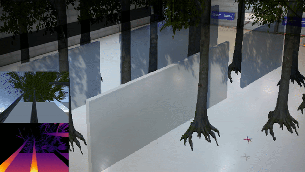

Luyao Liu (刘路瑶)

Email: liuly2023@mail.sustech.edu.cn
This website is under development. Some of the information on it is not relevant to me. Please do not believe it! Sorry!
I am a second year master student in the Department of Electronic and Electrical Engineering at Southern University of Science and Technology.
My work focuses on designing algorithms to help robots handle environmental disturbances and model uncertainty. I aim to enpower robotic systems to dynamically adapt environment changes in real-time and learn continuously in real-world scenarios, utilizing methodologies from both the learning and control communities.
News
| Jun 6, 2025 | My personal homepage is released! |
|---|---|
| Jan 29, 2025 | Our work “Dynamic Perception-Enhanced Motion Planning and Control for UAVs Flights in Challenging Dynamic Environments” is accpeted by ICRA 2025. |
| Sep 1, 2023 | I join in Robotics and Computer Vision Lab (RCV Lab) as a graduate researcher. |
Publications
 | 2025 IEEE International Conference on Robotics and Automation (ICRA 2025) |
|  | ICRA 2023 A learning-based method that achieves perception-aware, minimum-time, vision-based flight in cluttered environments. |
Projects
 | An offline python SLAM using COLMAP and ORB-SLAM which is robust, accurate, and highly extensible. |

Life is waiting us to explore more. Let's keep moving.